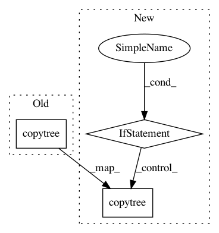

7e177f66f5f6676c34985f4bf6debe6ffac15ae9,mro/stages/feature/summarize_crispr_analysis/__init__.py,,main,#Any#Any#,27
Before Change
perturbation_effects_by_target_dir = os.path.join(outs.crispr_analysis, "perturbation_effects_by_target")
cr_io.makedirs(perturbation_effects_by_target_dir, allow_existing=True)
cr_io.copytree(args.perturbation_effects_by_target, perturbation_effects_by_target_dir, allow_existing=True)
After Change
cr_io.makedirs(perturbation_effects_by_feature_dir, allow_existing=True)
cr_io.copytree(args.perturbation_effects_by_feature, perturbation_effects_by_feature_dir, allow_existing=True)
if os.path.isdir(args.perturbation_effects_by_target):
perturbation_effects_by_target_dir = os.path.join(outs.crispr_analysis, "perturbation_effects_by_target")
cr_io.makedirs(perturbation_effects_by_target_dir, allow_existing=True)
cr_io.copytree(args.perturbation_effects_by_target, perturbation_effects_by_target_dir, allow_existing=True)
In pattern: SUPERPATTERN
Frequency: 3
Non-data size: 3
Instances
Project Name: 10XGenomics/cellranger
Commit Name: 7e177f66f5f6676c34985f4bf6debe6ffac15ae9
Time: 2019-02-20
Author: niranjan.srinivas@10xgenomics.com
File Name: mro/stages/feature/summarize_crispr_analysis/__init__.py
Class Name:
Method Name: main
Project Name: CyberReboot/NetworkML
Commit Name: 6027a21a3761d563f3a725d06768a38e76064574
Time: 2019-12-11
Author: josh@vandervecken.com
File Name: tests/test_networkml.py
Class Name:
Method Name: copy_model
Project Name: aws/sagemaker-python-sdk
Commit Name: 2787824ebcca0a4e9974487f3e70fd0cfcb02005
Time: 2019-05-20
Author: mvs.usp@gmail.com
File Name: src/sagemaker/utils.py
Class Name:
Method Name: repack_model